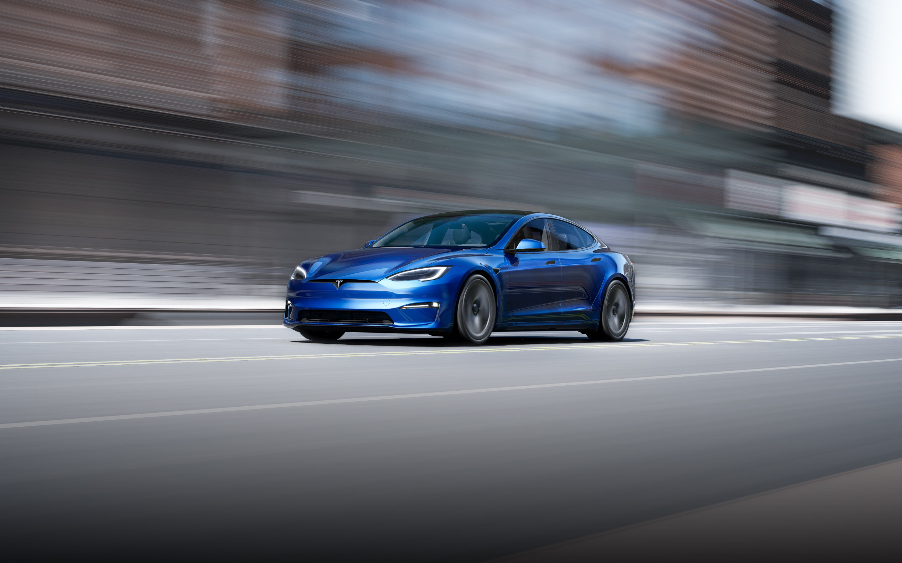

Perfect Environment Air vents are hidden throughout the cabin, while tri-zone temperature controls, ventilated seats and HEPA filtration deliver the perfect environment.
Console-Grade Gaming Up to 10 teraflops of processing power unlock in-car gaming on-par with today’s newest consoles. Play from any seat with wireless controller and headset compatibility.
Immersive Sound A 22-speaker, 960-watt audio system with Active Road Noise Reduction offers immersive listening and studio-grade sound quality.
Room for Everything With front and rear trunks and fold-flat seats you can fit your bike without taking the wheel off—and your luggage too.
Model S Plaid has the quickest acceleration of any vehicle in production. Updated battery architecture for all Model S trims enables back-to-back track runs without performance degradation.
 Main page